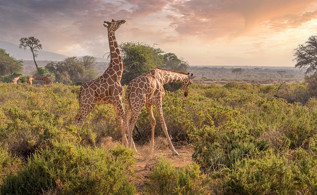

Цікаві Факти про Жираф.
1. Більшу частину свого життя жирафи проводять стоячи. У такому положенні вони сплять і навіть народжують.
2. Жирафа найвища тварина з усіх нині живих у світі. Її зріст може досягати 5,5 метрів, а вага 900 кг.
3. Шия в жирафи буває довжиною до 2 метрів. Незважаючи на таку довгу шию, у жирафи, як і в більшості інших ссавців, усього 7 шийних хребців. Однак, на відміну від інших тварин, у жирафи шийні хребці мають подовжену форму й особливу будову, що робить її шию дуже гнучкою. Завдяки цьому, жирафа може згинати шию, як їй захочеться. Ця особливість дає їй змогу доглядати за своїм тілом, а також добувати корм у важкодоступних місцях.
4. Окрім шиї, жирафа має довгий та чорний язик. Довжина язика жирафа складає близько 50 сантиметрів. Цим язиком вона дістає листя і навіть чистити вуха!
5. Незважаючи на спроби самиць вберегти своїх дитинчат від левів, плямистих гієн, леопардів і африканських диких собак, багато малюків гинуть у перші місяці життя.
6. Сон жирафи триває всього годину на добу.
7. Всього через годину після народження дитинча жирафа починає ходити.
8. Щоб спілкуватись один між одним, жирафи мукають, гарчать, свистять або шиплять.
9. Жирафи – єдині тварини, які не вміють позіхати.
10. Щодня жирафа споживає приблизно 30 кг їжі і проводить за споживанням від 16 до 20 годин на добу.
11. Крок жирафи становить приблизно 4 м в спокійному стані.
12. У дикій природі жирафа живе в середньому — 25 років
Перейти до наступної тварини